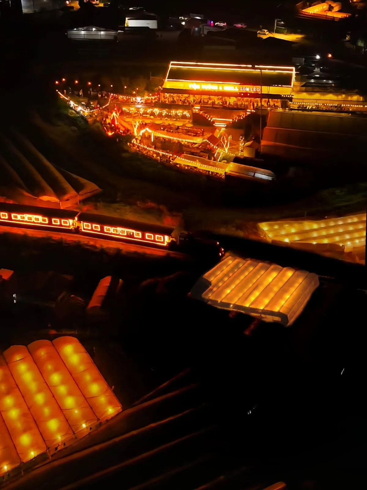

Ăn khuya ở Đà Lạt — Đặc sản đêm phố núi
Đà Lạt về đêm lạnh và yên tĩnh, nhưng không thiếu nơi ăn uống! Quán nướng Đà Lạt mở khuya là lựa chọn yêu thích của dân du lịch thích "cú đêm" — ngồi ngoài trời se lạnh, nướng thịt than hoa, uống bia hoặc trà nóng. Cảm giác này chỉ Đà Lạt mới có.
1. Trạm Dừng Chill — Mở đến 23:00
Trạm Dừng Chill phục vụ đến 23h hàng đêm — đủ thời gian cho bữa nướng khuya thoải mái. Từ 19h trở đi, biển sao nhà lồng lên đèn lung linh tạo backdrop cực đẹp. Gọi set nướng + lẩu nóng cho đêm lạnh, giá từ 95K/người.
Tip: Đến lúc 20h-20h30, ăn nướng ngắm biển sao, 22h30 xong xuôi về khách sạn vừa kịp!

2. Nướng vỉa hè Hoà Bình — Mở đến 23:30
Khu vực quảng trường Lâm Viên có nhiều hàng nướng vỉa hè mở rất khuya. Xiên que, bắp nướng, trứng cút — giá 30-60K. Ăn xong dạo chợ đêm (mở đến 23h30).
3. Quán ốc đêm Bùi Thị Xuân — Mở đến 00:00
Ốc xào, nghêu nướng, chả mực — đồ nhậu đêm kiểu Sài Gòn giữa phố núi. Mở đến nửa đêm, giá 150-250K cho 2 người, có bia tươi.
4. BBQ đêm đường Phan Đình Phùng — Mở đến 23:00
Dãy quán nướng bình dân trên phố Phan Đình Phùng, phục vụ từ chiều đến 23h. Nướng than hoa, lẩu nóng, giá 100-180K/người. Không gian nhỏ nhưng ấm cúng.
5. Quán nhậu sân thượng trung tâm — Mở đến 00:30
Nướng + cocktail trên sân thượng nhìn xuống phố đêm Đà Lạt. Mở muộn nhất trong danh sách — đến 00:30. View đèn thành phố lung linh, giá 150-300K/người.

Kết luận
Muốn ăn nướng khuya ở Đà Lạt vừa ngon vừa view đẹp? Hãy đến Trạm Dừng Chill từ 20h để ngắm biển sao nhà lồng lung linh. Đặt bàn trước vì cuối tuần rất đông khách buổi tối!